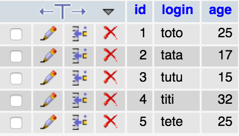
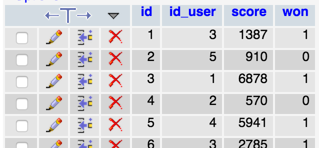
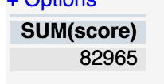
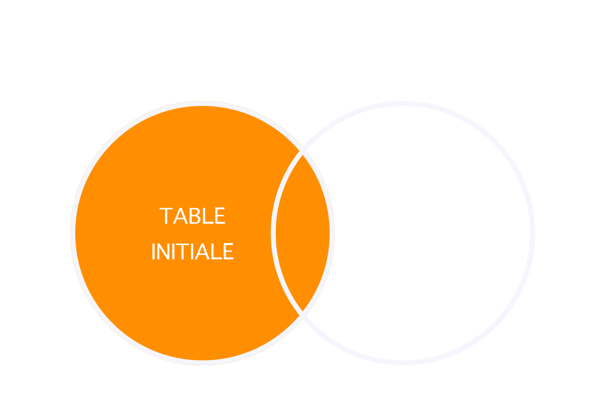

SELECT ... FROM ...
SELECT
*
FROM
users
INSERT INTO ... VALUES ...
INSERT INTO
users (login, password, email)
VALUES
('bruno', 'azerty', 'bruno.simon@hetic.net')
UPDATE ... SET ...
UPDATE
users
SET
login = 'toto'
DELETE FROM ...
DELETE FROM
users
Dans PhpMyAdmin, créez une base de données et exécutez la requête SQL suivante
SET SQL_MODE="NO_AUTO_VALUE_ON_ZERO";
SET time_zone = "+00:00";
CREATE TABLE `games` (
`id` int(11) NOT NULL AUTO_INCREMENT,
`id_user` int(11) NOT NULL,
`score` int(11) NOT NULL,
`won` tinyint(4) NOT NULL,
PRIMARY KEY (`id`)
) ENGINE=InnoDB DEFAULT CHARSET=utf8 AUTO_INCREMENT=21 ;
INSERT INTO `games` (`id`, `id_user`, `score`, `won`) VALUES
(1, 3, 1384, 1),
(2, 5, 910, 0),
(3, 1, 6878, 1),
(4, 2, 570, 0),
(5, 4, 5941, 1),
(6, 3, 2785, 1),
(7, 2, 8742, 0),
(8, 1, 6722, 0),
(9, 4, 6689, 1),
(10, 2, 5587, 1),
(11, 1, 5221, 1),
(12, 2, 5060, 1),
(13, 6, 2174, 0),
(14, 3, 8390, 1),
(15, 4, 1568, 0),
(16, 4, 6688, 1),
(17, 6, 2401, 1),
(18, 5, 1741, 1),
(19, 3, 707, 0),
(20, 1, 1402, 1);
CREATE TABLE `users` (
`id` int(11) NOT NULL AUTO_INCREMENT,
`login` varchar(50) NOT NULL,
`age` int(11) NOT NULL,
PRIMARY KEY (`id`)
) ENGINE=InnoDB DEFAULT CHARSET=utf8 AUTO_INCREMENT=6 ;
INSERT INTO `users` (`id`, `login`, `age`) VALUES
(1, 'Toto', 25),
(2, 'Tata', 17),
(3, 'Tutu', 15),
(4, 'John', 32),
(5, 'Timmy', 25);
Cette requêtes va créer et remplir une table users et une table games
 
Pour rajouter une condition à notre requête, on utilise le terme WHERE suivi de notre condition
SELECT
*
FROM
users
WHERE
id = 3
AND et OR permettent de combiner plusieurs conditions
Les AND s'effectuent avant les OR
SELECT
*
FROM
users
WHERE
id = 3 OR id = 1 AND login = 'tata'
Comme en mathématiques, il est possible d'utiliser des parenthèses
SELECT
*
FROM
users
WHERE
(id = 3 OR id = 1) AND login = 'tata'
Les conditions supportent plusieurs opérateurs
SELECT
*
FROM
users
WHERE
age > 21
Et d'autres encore
SELECT
*
FROM
users
WHERE
age BETWEEN 16 AND 25
SELECT
*
FROM
users
WHERE
login LIKE "t%"
Trouvez les requêtes SQL permettant de récupérer les games pour les conditions suivantes :
SQL permet de récupérer des données directement calculées grâce à certaines fonctions
Une nouvelle colonne ayant le nom de la fonction va être créée
MySQL le fait bien plus vite que PHP
SELECT
SUM(score)
FROM
games

Il est possible de changer le nom de la colonne pour quelque chose de plus pratique grâce aux alias
SELECT
SUM(score) AS total
FROM
games
Le AS est optionnel
Trouvez les requêtes SQL permettant de récupérer les informations suivantes :
SQL permet d'ordonner les résultats avec ORDER BY suivi de la colonne définissant l'ordre
SELECT
*
FROM
games
ORDER BY
score
Pour ordonner dans l'ordre inverse, il suffit de préciser DESC après la colonne
SELECT
*
FROM
games
ORDER BY
score DESC
Pour ordonner dans le désordre, il suffit de préciser RAND() à la place de la colonne
SELECT
*
FROM
games
ORDER BY
RAND()
Trouvez les requêtes SQL permettant de récupérer les games suivantes :
LIMIT permet de limiter le nombre de résultats
SELECT
*
FROM
games
LIMIT
3
LIMIT permet aussi de commencer à partir d'une certaine ligne (utile pour une pagination)
SELECT
*
FROM
games
LIMIT
1, 3
Trouvez les requêtes SQL permettant de récupérer les games suivantes :
Group by permet de regrouper les résultats par valeur d'une colonne
SELECT
*
FROM
games
GROUP BY
id_user
Seul, il ne sert pas à grand chose. Mais combinez avec les opérations précédentes, GROUP BY permet d'obtenir des résultats intéressant
SELECT
id_user, AVG(score) AS average_score
FROM
games
GROUP BY
id_user
Trouvez les requêtes SQL permettant de récupérer les données suivantes :
Il est possible de mettre à jour une donnée à partir de sa donnée initiale (exemple : incrémenter)
UPDATE
games
SET
score = score + 1
WHERE
id = 1
Les jointures permettent de lier des tables entre elles au sein d'une même requête SQL
Dans notre exemple, si on souhaite récupérer toutes les parties et y ajouter le nom du joueur correspondant, il faudrait faire plusieurs requêtes et un traitement PHP
Grâce aux jointures, on peut le faire en une requête
Il existe différents type de jointures. Nous allons commencer par JOIN LEFT
La jointure consiste à faire une première requête SELECT sur une table intiale
SELECT
*
FROM
games
À la joindre à une deuxième table
LEFT JOIN
users
En précisant le critère permettant de les lier
ON
users.id = games.id_user
On demande à MySQL de récupérer toutes les lignes de la table games et de les lier aux lignes de la table users avec comme critère que id de la table users soit égal à id_user de la table games
SELECT
*
FROM
games
LEFT JOIN
users
ON
users.id = games.id_user
Les noms de tables peuvent parfois être long à écrire. Il est possible d'utiliser des alias sur celles-ci.
SELECT
*
FROM
games AS g
LEFT JOIN
users AS u
ON
u.id = g.id_user
Le AS est optionnel
Il est évidemment possible de préciser quelles colonnes renvoyer à la place de * en spécifiant bien la table
SELECT
g.id, g.score, g.won, u.login
FROM
games AS g
LEFT JOIN
users AS u
ON
u.id = g.id_user
Si MySQL ne trouve pas de correspondance, il renvoie tout de même l'élément initial et met les autres valeurs à NULL
Le principe de LEFT JOIN est donc de partir de la table initiale pour chercher les correspondances dans la table jointe
RIGHT JOIN permet de faire l'inverse : partir de la table jointe pour chercher les correspondances dans la table initiale
INNER JOIN fonctionne comme LEFT JOIN, mais ne renvoie pas l'élément si aucune correspondance n'a été trouvé

Il existe encore d'autres jointures, mais LEFT JOIN suffit dans la majorité des cas